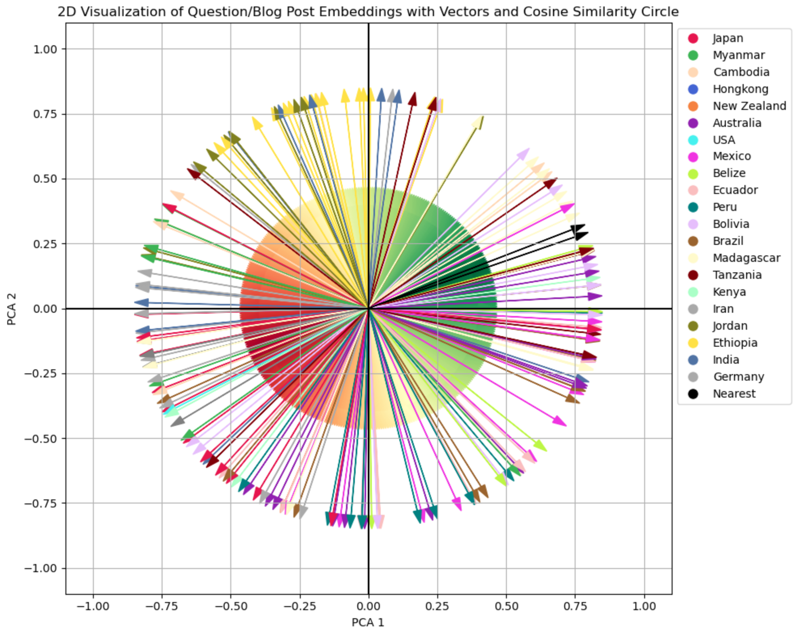

import sys
sys.path.append('../../../lm-hackers/notebook_chat')
from notebook_chat import ChatMessages, Llama2ChatVersion2
from llama_cpp import Llama
llm = Llama(model_path="../../../lm-hackers/models/llama-2-7b-chat.Q4_K_M.gguf", n_ctx=4096, verbose=False)Back in 2017/2018 my wife and I did a world trip, and we documented it on our blog Wittmann-Tours.de. These 14 month were among the most exciting times of my life, but nonetheless, I start forgetting details. Therefore, I thought it would be great to have a large language model (LLM) which could help me remember the details.
From Idea to Data
How did I come up with this idea? Reworking the Retrieval Augmented Retrieval (RAG) section from the hackers guide, I decided, I wanted to build my own RAG application, but what would be a good data source? I needed a good data source which fulfilled 2 criteria:
- The LLM I used for the exercise should not know the content of the data source.
- I should know the content of the data source very well to be able to judge if the LLM, once RAG is implemented, could answer questions related to the data source correctly.
Since our blog is pretty low-profile, Wittmann-Tours.de fulfilled all the requirements perfectly, but how can I use it fot this project? As with many machine learning projects, data is the key to success. Therefore, I needed to pause a bit on the RAG implementation and started to work on converting my blog to markdown. This was more difficult than expected, and you can read the full story in this blog post. By now, the Wittmann-Tours blog is available my Wittmann-Tours GitHub repo under license CC-BY NC.

What is Retrieval Augmented Generation (RAG)?
Before explaining Retrieval Augmented Generation (RAG), let’s look at some of the challenges we can typically face with large language models (LLMs):
- LLMs can hallucinate, meaning that they can generate false or misleading information, nonetheless presented in a very plausible sounding way.
- LLMs do not have up-to-date information because they have been trained on a fixed corpus of information.
- LLMs cannot always give sources. Why? Here’s my take: As Andrej Karpathy pointed out, an LLM is a lossy compression of text containing only the gestalt of the text. This translates well to our own way of learning. After you have read a Wikipedia article, you cannot recite the whole article, but you have learned the essence of the article. Similarly, the detailed references are lost during LLM references.
Speaking of sources: IBM Research has published a very accessible Youtube Video / blog post describing key challenges with LLMs and how RAG addresses these issues.
RAG addresses these issues by giving additional context to a question/prompt you send to an LLM, therefore addressing the issues above:
- When you ask an LLM about a topic, and pass along the related Wikipedia article, the answer is very likely to be factually correct.
- You can pass any additional information to the LLM, crossing also into the time after the training cut-off.
- Let’s assume there is a mechanism to select the appropriate source (more on that later), the LLM can tell you the source of the information it used for the answer.
Going back to its origin, RAG was first introduced in a paper by Facebook AI Research (today’s research group of Meta) in 2020 as a mechanism to enhance the capabilities of language models by adding relevant contextual information to the user prompt. As we have seen in the hacker’s guide, here is a simple way how we can formulate a RAG-prompt:
prompt_with_context = (
f"Answer the question with the help of the provided context."
f"## Question"
f"{question}"
f"## Context"
f"{context}"
)Let’s try that out and build mini-framework which enables a Llama2-LLM to answer questions related to the Wittmann-Tours.de blog. If you prefer to run all the code yourself, please check out this notebook on GitHub.
LLM Setup
Let me reuse the pattern I developed in the chat consumer notebook based on my blog post Building Chat for Jupyter Notebooks from Scratch. This time, let’s use the maximum context window size possible for this model (n_ctx=4096) to fit as much context as possible into the prompt.
Loading The Wittmann-Tours.de dataset
The Wittmann-Tours.de blog is available for download as a dataset in the Wittmann-Tours repo.
wget -P ./wt-blogposts https://github.com/chrwittm/wittmann-tours/raw/main/zip/blogposts-md.zip
unzip -o ./wt-blogposts/blogposts-md.zip -d ./wt-blogposts/As a result we have all the blog posts in a folder called wt-blogposts.
Note: This is just an example, I write this blog in Jupyter notebooks, the the references will look a bit different below reflecting the file system on my local machine.
Building the Wittmann-Tours LLM with RAG
Before we start, let’s quickly verify that the LLM does not know about the blog by asking an example question:
question = "What was the name of the guide who led us on our tour in the Masoala rain forest on Madagascar?"
chat = Llama2ChatVersion2(llm, "Answer in a very concise and accurate way")
chat.prompt_llama2_stream(f"{question}")The name of the guide who led your tour in the Masoala rainforest on Madagascar is… (drumroll) …Rahel!
Well, it tried to guess, but the answer is not correct. Let’s provide more context, here is the blog post about Masoala:
path_to_blogpost = "../../../lm-hackers/wt-blogposts/drei-tage-im-masoalaregenwald/index.md"
with open(path_to_blogpost, 'r') as file:
content = file.read()
print(f"The blogpost has {len(content)} characters")
print(content[:905])The blogpost has 18435 characters
---
title: 'Drei Tage im Masoala-Regenwald'
description: ""
published: 2019-07-14
redirect_from:
- https://wittmann-tours.de/drei-tage-im-masoala-regenwald/
categories: "Brookesia, Chamäleon, Lemur, Madagaskar, Madagaskar, Maki, Masoala, Regenwald, roter Vari, Taggecko, Umweltschutz, Vari, Wald, Wanderung"
hero: ./img/wp-content-uploads-2019-06-CW-20180820-105656-0464-1024x683.jpg
---
# Drei Tage im Masoala-Regenwald
Nach einer knapp 2-stündigen Bootsfahrt von [Nosy Mangabe](http://wittmann-tours.de/nosy-mangabe) aus erreichten wir unser Ziel, die Masoala Forest Lodge. Wir landeten an einem Strand und gingen kaum 200 Meter landeinwärts, wo ein paar hübsche kleine Bungalows auf uns warteten. So viel Luxus hatten wir nach der vorherigen Campingnacht kaum erwartet. Um das gute Wetter - sprich kein Regen - auszunutzen, starteten wir umgehend auf die erste Wanderung durch den Urwald.Before we can ask the question in context it is important to realize that the model we use has a maximum context window of 4096 tokens. Since the blog post is longer, I only pass the first section. Realizing this limitation, I will not solve this here, because the main goal it to understand how we can provide context at all.
def get_question_with_context(question, context):
return ( f"Answer the question with the help of the provided context."
f"## Question"
f"{question}"
f"## Context"
f"{context}"
)question = "What was the name of the guide who led us on our tour in the Masoala rain forest on Madagascar?"
chat = Llama2ChatVersion2(llm, "Answer in a very concise and accurate way")
chat.prompt_llama2_stream(f"{get_question_with_context(question, content[:6000])}")The guide who led us on our tour in the Masoala rainforest was named Armand.
The answer is correct! However, it feels a bit like a self-fulfilling prophecy since we manually added the right context.
How can we automate the search for the right context? The secret sauce contains a semantic search via embeddings.
Using Embeddings to Determine Context
I have discussed embeddings in detail in my blog post Visualizing Embeddings in 2D. Here is a quick recap:
An embedding is a high-dimensional numerical representations (a vector) of text which encodes semantic information. To put this in simple language: An embedding is a bunch of numbers which magically happens to describe the meaning of the text they represent. Embeddings which contain similar information are close to each other, and we can calculate the distance between 2 embeddings. Before we calculate the similarity between embeddings of questions and blog posts, let’s visualize them to get a more intuitive understanding what is happening under the hood.
Visual Context Determination
Visualizing the blog posts embeddings the same way as in Visualizing Embeddings in 2D, we get the following chart:

This chart looks very confusing at first glance, so let’s unpack:
- The arrows (the vectors) each represent a blog post, i.e. the embedding of the blog post which contains semantic information.
- The arrows are color-coded by country. We can see that some clusters, for example, the arrow for Ethiopia in yellow mostly point in other directions than the red ones representing Japan. There are, however, also close ones. Without having checked, I assume that this could be blog posts talking about food.
- There are 2 black arrows in the chart labeled “Nearest”. These are the two vectors representing the Masoala Blog Post and the question “What was the name of the guide who led us on our 3-day tour in the Masoala rain forest on Madagascar?”. (Please also read the Postscriptum for this blog post.)
- The colorful circle in the middle represents the cosine similarity: Green represents closeness. Spanning via yellow to red, the similarity decreases.
This nice visualization, shows how the computer can do a semantic search and determine the most relevant context for a question we ask an LLM: One of the black arrows represents the question, and the other represents the blog post. Because the (consine) similarity is highest between the 2, the Masoala blog post is the best context for the question.
Computational Context Determination
The visualization above hopefully provided a way to intuitively understand in 2D what we will now compute in higher dimensionality dimensions. Let’s start with defining some functions. If you want to follow along interactively, here is the related jupyter notebook.
import os
import glob
from sentence_transformers import SentenceTransformer
#emb_model = SentenceTransformer("BAAI/bge-small-en-v1.5", device="mps") #English
emb_model = SentenceTransformer("BAAI/bge-m3", device="mps") #Multi-lingual
def get_blog_post_files(path_to_blog):
pattern = os.path.join(path_to_blog, "**/*.md")
return glob.glob(pattern, recursive=True)
def get_blog_post(path):
with open(path, 'r') as file:
content = file.read()
return content
def get_text_embedding(text):
return emb_model.encode(text, convert_to_tensor=True)
def get_blog_post_embedding(path):
blog_post_text = get_blog_post(path)
return get_text_embedding(blog_post_text)To see an example of an high-dimensional embedding, here is the question embedding and the first 5-dimensions:
question_embedding = get_text_embedding(question)
print(question_embedding[:5])
print(question_embedding.shape)tensor([-0.0244, -0.0237, -0.0702, -0.0352, -0.0163], device='mps:0')
torch.Size([1024])Now let’s compute the cosine similarity in 1024-dimensional space for 3 examples:
import torch.nn.functional as F
def get_similarity(embedding1, embedding2):
return F.cosine_similarity(embedding1, embedding2, dim=0)blog_posts = ["../../../lm-hackers/wt-blogposts/drei-tage-im-masoalaregenwald/index.md",
"../../../lm-hackers/wt-blogposts/der-bolivianische-dschungel-im-madidi-nationalpark/index.md",
"../../../lm-hackers/wt-blogposts/essen-mit-stern-hongkong-kulinarisch/index.md"]
similarities = [get_similarity(question_embedding, get_blog_post_embedding(blog_post)) for blog_post in blog_posts]
similarities[tensor(0.6135, device='mps:0'),
tensor(0.5241, device='mps:0'),
tensor(0.3370, device='mps:0')]Not surprisingly, the blog post about the Masoala Rain Forst has the highest cosine similarity.
Let’s put it all together and do a lookup over all blog posts related to a question.
def get_blog_post_as_context(question):
files = get_blog_post_files("../../../lm-hackers/wt-blogposts")
best_match = ""
best_match_embedding = get_text_embedding(best_match)
question_embedding = get_text_embedding(question)
best_similarity = get_similarity(question_embedding, best_match_embedding)
for file in files:
blog_post_embedding = get_blog_post_embedding(file)
blog_post_similarity = get_similarity(question_embedding, blog_post_embedding)
if blog_post_similarity > best_similarity:
best_similarity = blog_post_similarity
best_match = file
return best_matchThe mechanism in the cell above is quite inefficient, but the goal is to show the basic concept how to find the blog post best related to a question, or to put is in more general words, how to determine the best context for a question.
Let’s combine the context determination with prompting the LLM and displaying the source of the answer:
question = "What was the name of the guide who led us on our tour in the Masoala rain forest on Madagascar?"
blog_post_path = get_blog_post_as_context(question)
blog_post_context = get_blog_post(blog_post_path)
chat = Llama2ChatVersion2(llm, "Answer in a very concise and accurate way")
chat.prompt_llama2_stream(f"{get_question_with_context(question, blog_post_context[:6000])}")
print(f"Context used: {blog_post_path}")The guide who led us on our tour in the Masoala rainforest on Madagascar was named Armand.
Context used: ../../../lm-hackers/wt-blogposts/nosy-mangabe/index.mdConclusion
We have successfully built a RAG-application to answer questions related to the Wittmann-Tours.de blog - Juhu! Between the lines, you can already see more general concepts:
- We have indexed all blog posts into embeddings to encode their semantics. This essentially translates to adding data to a vector database.
- We have computed the embedding for a question and visualized/computed finding the closest blog post. This essentially translates to querying a vector database.
The implementation successfully helped to mitigate typical LLM-related problems described above in the following way:
- By grounding the LLM in data related to the question, the LLM did not hallucinate.
- The LLM can answer questions related to topics it was never trained on.
- Alongside the answer we get the source of the information and can cross-check if needed.
Postscriptum
Just as I wrote the conclusion of this blog post, I realized what I would label a “copy&paste error”. This error, however, did not really materialize, and I think it is very interesting, so I though it is worth mentioning - But what happened?
Initially, I used the embedding model (BAAI/bge-small-en-v1.5), copy&pasting from the hacker’s guide into my embedding notebook, copy&pasting into this notebook. This model, however, has been trained on English, but the Wittmann-Tours.de blog is written in German. Nonetheless, it performed very well in calculating the similarity of the vectors, and it even bridged the gap between the German texts and the English question.
I only noticed one slight inconsistency: When visualizing the blog posts in 2D, the question “What was the name of the guide who led us on our 3-day tour in the Masoala rain forest on Madagascar?” did not show the Masoala blog post as the closest vector. Initially, I just thought the reason was rooted in the dimensionality reduction from 384 to 2 dimensions. After realizing the language issue, changing the embedding model to the multi-lingual BAAI/bge-m3 fixed that. For educational purposes, however, I used the slightly tweaked visualization from the english embedding model because the visualization from the multi-lingual model is too perfect: The arrows of the question and of the blog post are displayed as one. Embrace your errors, and usually they yield something useful!
References
[1] The original RAG-paper: Retrieval-Augmented Generation for Knowledge-Intensive NLP Tasks
[2] The Hacker’s Guide by Jeremy Howard
[3] Visualizing Embeddings in 2D
[4] The Wittmann-Tours.de blog, also available on GitHub